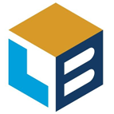
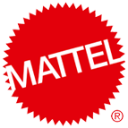

Professional Summary
Principal UX Leader specializing in enterprise software, UI/UX architecture, and design systems. Expert in healthcare applications, logistics platforms, and B2B/B2C solutions. Proven track record of delivering user-centered designs that drive business growth and improve operational efficiency by 30-40%. Specialist in accessibility (WCAG) and cross-functional team leadership.
Key Professional Highlights
- Demonstrated leadership managing an average of 5 concurrent projects with cross-functional teams of 5-15 members. Successfully executed roles in project management, creative direction, and technical leadership across enterprise-scale initiatives.
- Led design strategy for enterprise healthcare, logistics, and GIS applications, achieving 30% increase in user adoption and 40% reduction in training time.
- Established design systems and UI component libraries that reduce development time by 50% while ensuring consistent user experiences.
- Expert in information architecture (IA), user research, journey mapping, usability testing, and working within Agile environments.
- Technical proficiency in HTML, CSS, JavaScript, React, Angular, and Flutter, enabling effective product and engineering team collaboration.
- Skilled in web technologies and design tools (Figma, Adobe Creative Suite).
Professional Experience
GPCGP Creative, LLC
Owner / Head of Design
Present
Dana Point, CA · Remote
- Served as design lead for a cross-functional product team and launched an integrated logistics platform in just 3 months. The system included modules for product fulfillment, transportation management, and warehouse inventory, with real-time dashboards tracking trailer dwell times, warehouse throughput, and driver performance
- Spearheaded a comprehensive IA and UI redesign for a B2C application that provides customized care to clients in their homes and in independent living facilities. Helping the business efficiently match caregivers' skills to clients' needs contributed to 30% business growth
- Designed a staffing process that streamlined caregiver shift-matching, significantly reducing manual scheduling time, decreasing missed shifts, and improving operational efficiency by replacing traditional call sheets with optimized candidate shortlists
- Designed the core framework for a Medicaid-funded Adult Family Care program, enabling accurate logging and submission of daily caregiver records to support monthly state stipends
WideNet Consulting Group
Lead Designer
Feb 2021 - Dec 2023
Dana Point, CA · Remote
- Designed integrated software solutions for managed home healthcare and assisted living facilities
- Rearchitected the IA to create a model that is standardized and scalable
- Created a design system of components, guidelines, and principles that were implemented across products and development platforms
- Responsible for the design of all workflows, visuals, composition, layout, and interactions
- Developed HTML, CSS and JS in Angular and Flutter within a GitFlow development system
 LightBox
Lead Product Designer / UI Engineer
Feb 2013 - Nov 2020
Irvine, CA
- Led the design of the company's first new product while working 100% remotely with 2 product and development teams over a span of 7 months
- United business goals with customer needs to deliver value to both LightBox and its clients
- Developed UX processes and strategies and guided their usage across the organization
- Worked with Product teams to understand requirements and goals and assist in translating those into user stories benefitting product development and usability testing
- Built a component design system to enhance our developers' experience by providing a consistent information architecture and a reduction in the cost of maintenance
- Collaborated with application developers to structure and document our design system to ensure consistency, flexibility, and scalability across our products
- Created production UI for use in design prototyping, stakeholder presentations, and developer implementation
- Oversaw usability testing that included test plan creation, user interviews, analysis, and the presentation of results
 Arbonne International
Arbonne International
Senior UX Designer / Developer
Oct 2012 - Feb 2013
Irvine, CA
- Developed tools to assist MLM representatives with running and growing their business
- Designed user Interface wireframes and interactive prototypes
- Applied visual design to key wireframes and oversaw consistency throughout the development cycle
- Created specifications for UI and visual design style
- Coded interactive elements through HTML/CSS/jQuery to provide working references for third-party development team
- Collaborated closely with user experience, business development, and technical development teams
Rakuten
Senior Designer
2003 - 2012
Aliso Viejo, CA
- Led the creative direction for one of the world's leading e-commerce portals
- Devised UI/UX solutions to simplify the consumer experience and increase sales
- Created dynamic applications and ad-solutions that added video, music, and product data to thousands of consumer-facing web pages
- Responsible for building and maintaining video integration tools and developing solutions to ensure compatibility across platforms
 Mattel, Inc
Senior Web Designer
1999 - 2003
El Segundo, CA
- Originated new concepts for video games and interactive toys across all Mattel-licensed brands (Barbie, Hot Wheels, Matchbox, Harry Potter)
- Advised production staff during the concept/design phase and directed third party developers throughout production
- Oversaw the visual direction and development of web sites for Mattel boy's brands
- Product Design
- User Experience Design (UED)
- User Interface Design
- Interaction Design
- Mobile Application Design
- Design Systems
- Accessibility (a11y)
- Visual Design
- Prototyping
- Cross-functional Team Leadership
- Web Technologies (HTML, CSS, JavaScript)
- Frameworks: React, Angular, Flutter
- Design Tools: Figma, Adobe Creative Suite
Education
Illinois Wesleyan University
BFA, Fine Art
- Concentration: Drawing and Painting
- GPA: 3.6/4.0 - Graduated Cum Laude
Columbia College Chicago
Certification in Traditional Animation
- Enhanced animation techniques and traditional drawing skills
- Studied sound-sync, camera techniques, and film editing
- Produced two animated short films